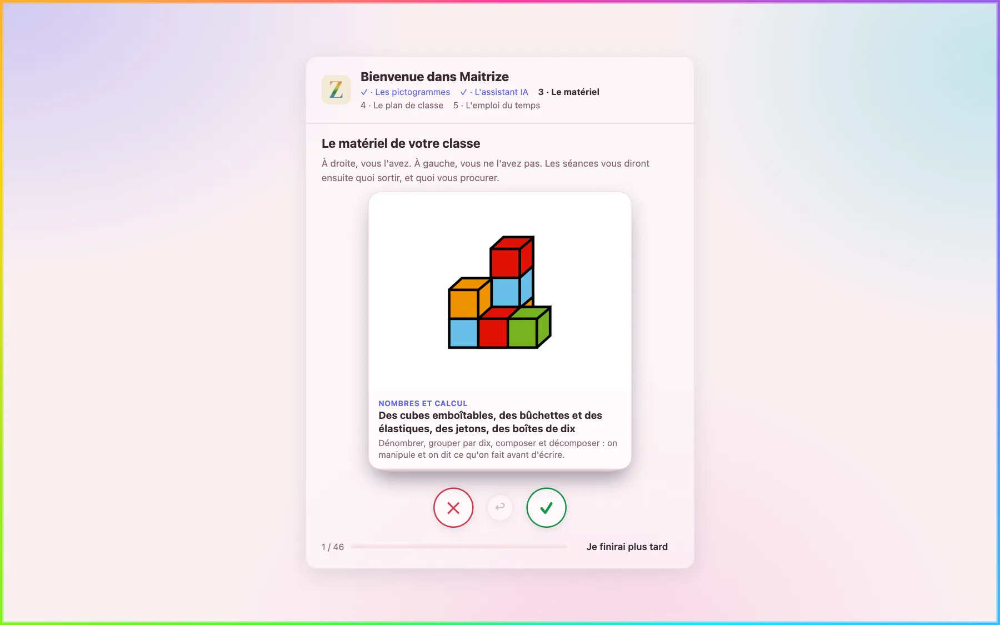
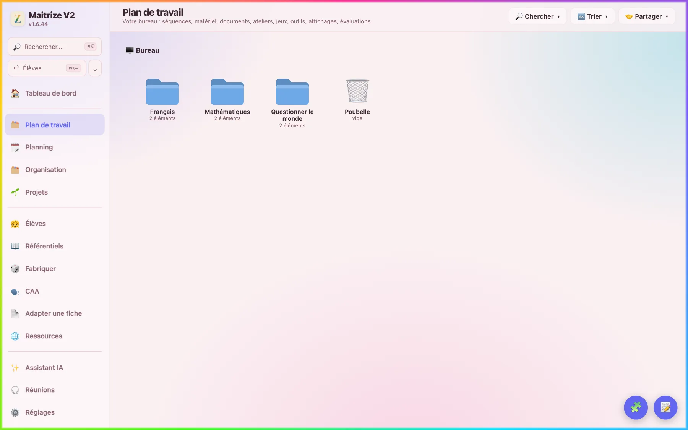

Le mode d'emploi
Rien n'oblige à tout utiliser. Installez, posez votre emploi du temps, écrivez votre premier cahier journal : le reste viendra quand vous en aurez besoin.
Installer Maitrize
Sur Mac
Il faut macOS 11 ou plus récent, avec une puce Apple ou Intel.
- Téléchargez Maitrize pour Mac.
- Ouvrez le fichier téléchargé, puis faites glisser Maitrize V2 sur le dossier Applications.
- Lancez Maitrize V2 depuis le dossier Applications. La première fois, macOS demande si vous voulez ouvrir une application téléchargée sur Internet : répondez Ouvrir.
Sur Windows
Il faut Windows 10 ou 11, en 64 bits.
- Téléchargez Maitrize pour Windows.
- Ouvrez le fichier téléchargé et suivez l'installation.
- Si Windows affiche « Windows a protégé votre ordinateur », cliquez sur Informations complémentaires, puis sur Exécuter quand même. Le fichier est signé au nom de son auteur : « Open Source Developer CLEMENT TITET ».
Sur un ordinateur professionnel géré par votre établissement ou votre académie, l'installation peut être bloquée. Demandez alors à votre référent numérique.
La première ouverture
Une page de bienvenue s'affiche à chaque lancement : un clic ou une touche, et vous entrez. La première fois, cochez J'ai lu et j'accepte les présentes Conditions Générales d'Utilisation, puis cliquez sur Accepter et continuer. Ensuite, cinq étapes installent votre classe.
- Les pictogrammes. Cliquez sur Installer les pictogrammes, puis sur Continuer. Il faut une connexion et une dizaine de minutes : environ 410 Mo arrivent une fois pour toutes, et tout fonctionne ensuite hors ligne. Sans connexion, Installer plus tard vous laisse passer, et l'étape revient au lancement suivant.
- L'assistant IA. Il est facultatif : cliquez sur Plus tard si vous n'avez pas de clé (voir L'IA, si vous le voulez).
- Le matériel. Faites glisser chaque carte à droite si vous avez ce matériel en classe, à gauche sinon, ou utilisez les boutons et les flèches. Je finirai plus tard arrête le tri. Il reprend dans Fabriquer, par Le matériel de la classe, puis Trier en balayant.
- Le plan de classe. Choisissez une disposition de départ (Îlots, Frontal, En U, Coin regroupement ou Une salle vide) et dessinez votre salle, ou cliquez sur Plus tard.
- L'emploi du temps. Créer mon emploi du temps vous y emmène, ou Plus tard.

Pensez ensuite à vous présenter : dans Réglages, onglet Général, remplissez Nom, École, Niveaux de la classe et Zone de vacances. Cela s'enregistre à mesure que vous écrivez.
L'emploi du temps
C'est la première chose à poser : le planning s'en sert ensuite chaque jour.
- Ouvrez Organisation, onglet Emploi du temps.
- Cliquez sur une plage vide. Dans la fenêtre Créneau, remplissez le jour, le début, la fin et l'intitulé, puis cliquez sur Enregistrer.
- Pour l'imprimer : Fichier, puis Imprimer (PDF).

Le cahier journal
Ouvrez Planning. La vue Jour montre la journée à gauche et le cahier journal à droite ; Semaine et Mois donnent une vue d'ensemble.
- Sur un jour vide, Générer le jour pose les créneaux de votre emploi du temps. Un clic sur une plage vide crée un créneau ; on en déplace un en le faisant glisser.
- Dans Prévu, écrivez ce que vous avez prévu. Le menu Ajouter y pose une séquence.
- Après la séance, écrivez dans Fait · bilan, ou dictez avec le micro 🎙.
- Rien à enregistrer : c'est automatique. Le bouton PDF imprime la journée.

La dictée peut se faire entièrement sur votre ordinateur : un modèle de transcription se télécharge une fois, dans Réglages, onglet Assistant IA, partie Transcription.
Séquences et séances
Plan de travail est votre bureau : séquences, documents, jeux, outils et affichages s'y rangent en dossiers, comme sur un ordinateur.

Créer une séquence
- Faites un clic droit sur le fond du bureau, puis choisissez Nouvelle séquence.
- Remplissez le Titre et la Compétence visée. Si Maitrize propose un déroulement, gardez-le avec Suivre ce déroulement ou écartez-le avec Ne pas le suivre. Cliquez sur Enregistrer.
- Ajoutez vos séances avec + Séance. Une séance s'enregistre seule, et Fabriquer une feuille vous y prépare son support.
Partir d'une séquence toute faite
- Ouvrez Fabriquer, puis Séquences toutes faites.
- Choisissez votre classe, puis une séquence dans le tableau, période par période.
- Regardez ses séances et ses feuilles, puis cliquez sur Créer la séquence. Elle arrive sur votre bureau, et vous la retouchez comme la vôtre.

Fabriquer une feuille
- Ouvrez Fabriquer et choisissez Un support de séance, Un outil pour l'élève ou Un affichage.
- Choisissez une carte. Chaque carte montre un exemple de sa feuille, et le champ de recherche trouve un loto, des syllabes, des fractions.
- L'écran s'ouvre sur un exemple. Partir de cet exemple le reprend, ou vous donnez vos mots, un thème ou vos images. Une image ne convient pas ? Cliquez dessus pour en choisir une autre. Autre tirage mélange de nouveau.
- Imprimer ouvre la feuille dans votre navigateur, prête à imprimer ou à enregistrer en PDF. Sur le bureau la range dans votre plan de travail.

CAA reste à côté pour tout ce qui passe par les pictogrammes : Consignes en pictos, Tableaux de langage, Supports visuels, Planches de pictos.
Les élèves
- Ouvrez Élèves, onglet Classe. Cliquez sur + Élève, remplissez le nom, le niveau et, si vous voulez, la date de naissance, puis Enregistrer.
- L'onglet Observations garde vos notes datées, élève par élève.
- L'onglet Évaluations crée une évaluation avec + Évaluation, puis se remplit avec Saisir.
- Dossier réunit tout ce qui concerne un élève ; Papiers garde ses documents ; Dispositifs guide les PPS, PAP, PAI, PPRE, PPI et le GEVA-Sco.

L'IA, si vous le voulez
Sans clé, tout ce qui ne demande pas d'IA fonctionne. Avec une clé, l'Assistant prépare une séance ou une séquence en conversant avec vous, et Mistral peut reformuler ou corriger un texte : vous relisez et vous décidez.
Mettre sa clé
- Créez une clé sur le site de Mistral, console.mistral.ai. Les modèles Ministral sont ouverts aux comptes gratuits ; Medium et Large demandent un abonnement.
- Dans Réglages, onglet Assistant IA, collez-la dans Clé API Mistral, puis cliquez sur Tester la connexion. Elle reste sur votre ordinateur.
- Faites ce que dit l'avertissement de cette page : sur admin.mistral.ai, menu Privacy, désactivez Anonymous improvement data, pour que Mistral n'entraîne pas ses modèles avec vos demandes. Puis cliquez sur C'est fait.
Ce qui part, et où
- Les demandes sont traitées dans l'Union européenne. Les noms des élèves et de l'établissement sont masqués, et un texte qui parle des élèves part sans rien qui désigne quelqu'un : un parent, un lieu, une date précise. Tout revient à sa place dans la réponse, sur votre ordinateur.
- Voir ce qui part avant chaque envoi vous montre le texte exact, sauf ce qui part tout seul : la mémoire de l'Assistant, la télécommande, la voix.
- Deux exceptions, signalées par un avertissement dans l'Assistant : la conversation à voix haute et la recherche sur internet ne sont pas traitées en Europe.
- La voix ne s'anonymise pas. Si vous choisissez la transcription en ligne, elle part telle quelle chez Mistral. Pour que rien ne sorte, choisissez la transcription sur l'ordinateur.
- Une image part entière : un prénom écrit sur une page photographiée n'est pas masqué. Évitez d'envoyer une page qui en porte un.
- Un diagnostic rare est remplacé par sa catégorie, mais un diagnostic courant part tel quel : évitez de l'écrire dans ce que vous envoyez.
Vos données
Tout est enregistré sur votre ordinateur. Vous trouverez ce qui suit dans Réglages, onglet Données & synchro.
Revenir en arrière
Maitrize garde seule un état par heure d'utilisation, et juste avant chaque mise à jour : tous sur deux jours, puis de moins en moins souvent, sur un an. Dans Revenir en arrière, choisissez une heure : l'écran dit ce qui reviendrait et ce qui s'en irait. Revenir à cet état reprend tout, Ne reprendre qu'un élément ne reprend qu'une chose, et le bouton Annuler du bandeau vous rattrape.
Votre travail en vrais fichiers
Mon travail sur le Bureau recopie tout dans un dossier « Maitrize » lisible sans l'application : le plan de travail, un dossier par élève, l'emploi du temps, le cahier journal. Il se met à jour tout seul, en deux minutes au plus. Ce que vous y modifiez ne revient pas dans Maitrize.
Les dossiers de vos élèves sont dans ce dossier. Si votre Bureau est synchronisé par un service comme iCloud ou OneDrive, ils partent avec lui. L'application vous le signale.
Chiffrez aussi le disque de votre ordinateur, pour qu'un ordinateur perdu ou volé ne livre rien : FileVault sur Mac, BitLocker sur Windows. L'application vous dit où il en est, dans ce même onglet.
Tout emporter
Avancé, puis Export manuel : Exporter (JSON) met toutes vos données dans un seul fichier, pièces jointes comprises et sans vos clés. Importer remplace tout ce que contient l'application, après en avoir gardé une copie.
Le compagnon sur iPhone
MaitrizeV2 Compagnon est gratuit sur l'App Store (iOS 15 ou plus récent). Vous dictez et vous notez en classe, et l'ordinateur range tout. Il passe par votre compte Nuage (apps.education.fr), chiffré : ni Nuage ni personne d'autre que votre ordinateur ne peut lire vos dictées.
Le relier
- Installez l'application sur l'iPhone.
- Sur l'ordinateur, dans Réglages, onglet Téléphone, partie Le téléphone par Nuage, choisissez le compte Nuage, puis cliquez sur Relier le téléphone. Un QR code s'affiche.
- Sur l'iPhone, onglet Réglages, touchez Scanner le QR code, puis Se connecter, et acceptez avec votre compte.
Ce qu'il fait
- Une dictée va dans le bilan de son créneau, sinon dans Vocaux du téléphone ; les notes et les photos arrivent aussi. Ils sont relevés quand Maitrize est ouverte.
- L'emploi du temps et le cahier journal se consultent sur le téléphone.
- Les tablettes des élèves reçoivent leurs fiches, les consignes et un minuteur : une tablette scanne un QR code, un navigateur lui suffit. Cela passe en clair sur le réseau local : ouvrez ce portail sur un réseau de confiance.
Avec vos collègues
Un bureau commun est un dossier de Nuage que Maitrize affiche à côté de votre bureau. Ouvrez Plan de travail, menu Partager, puis Bureaux communs.
- Rejoindre un bureau : Coller un lien de partage, puis le mot de passe du lien s'il y en a un. Il n'y a pas besoin de compte.
- Ouvrir le vôtre : dans Réglages, onglet Nuage, Partager mes dossiers, puis Créer le bureau commun.
- Inviter : depuis le menu ⋯ du bureau commun, Inviter un ami : créer un lien, avec un mot de passe, puis copiez le lien.
- Échanger : faites glisser un dossier d'un bureau à l'autre. Vos collègues le reçoivent en copie.
Les bilans de séance et les élèves associés aux outils ne partent pas. Les textes et les documents, eux, partent tels qu'ils sont écrits : relisez-les s'ils nomment un élève.
Deux ordinateurs
Pour retrouver votre travail à la maison et à l'école, il faut un stockage compatible S3 à vous (un NAS ou un hébergeur). Maitrize n'en fournit pas. Sur chaque ordinateur, dans Données & synchro, ouvrez Avancé, remplissez Sauvegarde sur mon stockage avec la même Phrase secrète de sauvegarde partout, puis cliquez sur Enregistrer la config et Tester. Vos données sont chiffrées avant de partir et se synchronisent ensuite seules, tant que Maitrize est ouverte.
Les mises à jour
Maitrize cherche les nouvelles versions au démarrage, puis régulièrement, et les télécharge sans vous déranger. Quand une version est prête, une pastille Relancer pour mettre à jour apparaît : un clic suffit. La version suivante s'ouvre sur Quoi de neuf, qui dit ce qui a changé. Ces mises à jour viennent des versions que l'auteur publie sur GitHub.
Aller plus vite
Sur Windows, Ctrl remplace ⌘.
| ⌘ K | Chercher partout : une action, une page, un dossier, un PDF, une séquence, un élève. |
| ⌘ Z | Annuler, même une suppression. Le bandeau Annuler reste aussi dix secondes. |
| ⌘ F | Chercher dans l'écran affiché. |
| ⌘ [ | Revenir à l'écran d'avant. |
Un problème ?
Quand une erreur survient, Maitrize propose Envoyer le rapport : un e-mail préparé s'ouvre, les noms y sont remplacés par « [élève] », et rien ne part sans vous. Vous pouvez aussi passer par Réglages, Données & synchro, Avancé, Journal d'incidents, puis Envoyer à l'éditeur.
Pour une question ou une idée : contact@maitrize.com.